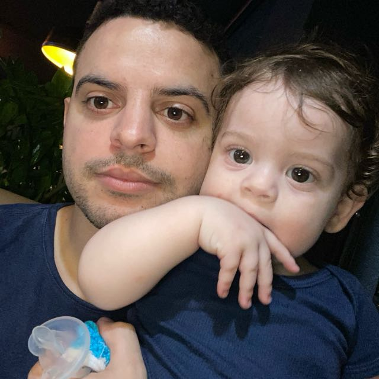
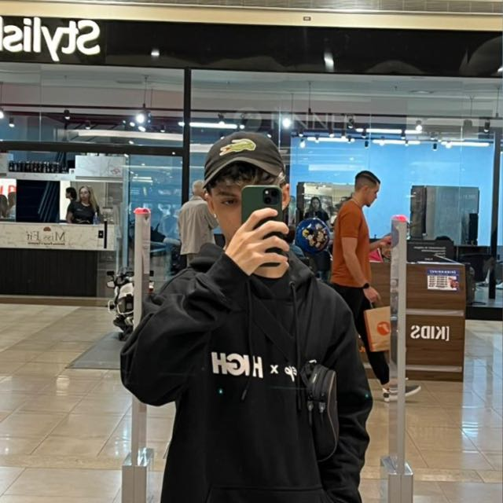

Caike Dametto
CEO - Chief Executive Officer
Caike é o fundador da AutoRecomenda e lidera a equipe na visão estratégica e no desenvolvimento de negócios.
Hobbies: Fotografia, Viajar
GitHub | RM: 558614 | E-mail: rm558614@fiap.com.br

Eric Rodrigues
CTO - Chief Technology Officer
Eric é responsável pela tecnologia por trás da AutoRecomenda, garantindo a qualidade e inovação em nossas soluções.
Hobbies: Programação, Jogar Futebol
GitHub | RM: 558650 | E-mail: rm558650@fiap.com.br

Kauã Mello
COO - Chief Operating Officer
Kauã supervisiona as operações diárias da AutoRecomenda, garantindo eficiência e excelência em nossos serviços.
Hobbies: Leitura, Praticar Esportes
GitHub | RM: 345678 | E-mail: rm555168@fiap.com.br